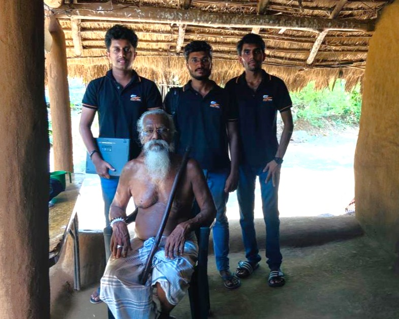

Active Research Project
Digital Preservation of
Sri Lankan
Indigenous Vedda Culture
PROJECT ID: 25-26J-492
The Vedda community of Sri Lanka speaks an oral-only language with fewer than 300 remaining speakers. This research project develops cutting-edge AI and 3D modelling technologies to digitally preserve their unique phonetics, cultural artifacts, and oral traditions before they are lost to time - bridging the gap between ancient heritage and modern technology.
< 300
Remaining Speakers
4
Research Components
3D
Phonetic Modelling
AI
Powered Assistance
📷 Field Research
From the Field
Documenting the living heritage of the Vedda community through immersive site visits and cultural engagement.

Traditional Vedda settlement - field research site visit

Traditional Vedda settlement - field research site visit

Traditional Vedda settlement - field research site visit

Cultural artifacts being documented and catalogued